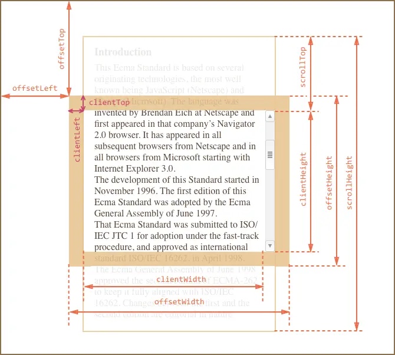

GIT
мощная и сложная распределенная система контроля версий.
Git How To- git init - Начало работы, инициализация репозитория
- git config - Создание конфигруации (--global user.name "Yaroslav"; --local user.email "*@m.d")
- git status - Проверка статуса файлов
- git add - Добавление файлов (-A - всех)
- git commit -a -m"Сообщение"
- git remote add origin url
- git branch -M main - Назначение главной ветки
- git push -u origin main
- git clone url /folder - Скачать репозиторий в папку
- git pull - Получить файлы с удалённого репозитория
Консольное приложение
- alert(title) - показывает сообщение и ждёт, пока пользователь нажмёт кнопку «ОК».
- prompt(title,[default]) показывает сообщение и запрашивает ввод текста от пользователя. Возвращает напечатанный в поле ввода текст или null, если была нажата кнопка «Отмена» или Esc с клавиатуры.
- confirm(question) показывает сообщение и ждёт, пока пользователь нажмёт OK или Отмена. Возвращает true, если нажата OK, и false, если нажата кнопка «Отмена» или Esc с клавиатуры.
запись ключа объекта, если мы задаем его кириллицей и пр. через квадратные скобки вместо точки работает корректенее
Циклы
Циклы while и forФункции
Подробнее про замыкания и ещё о них
Функции бывают:
- Function Declaration
Создаётся до начала выполнения скрипта, можно вызвать перед объявлением
- Function Expression
Создаётся только тогда, когда доходит поток кода, можно вызвать только после объявления
- Стрелочные функции
Не имеют своего контекста (this)
Методы строк и чисел
Строк:
- .indexOf('')
ищет подстроку в строке, при её отсутствии возварщает -1, если находит, возварщает индекс, с которого начинается подстрока
- .slice(-2, )
возваращет подстроку из стоки с ... по ... заданный индекс, принимает отрицательные значения (тогда отсчёт идёт с конца)
- .substring(2,4)
возваращет подстроку из стоки с ... по ... заданный индекс
- .substr(2,2)
возваращет подстроку из стоки с ... длиной в ...
Чисел:
- Math.round(var)
Округление до целых
- parseInt(var)
Может округлить до целого и убрать единицы измерения
- parseFloat(var)
Может убрать единицы измерения и оставить плавающую запятую
Колбэк функции
Адская пирамида колбэковОбъекты, деструктуризация объектов
оператор delete object.[] удаляет ключ - значение
деструктуризация const = {key2, key2} = object.key1 Подробнее
перебор for (key in object ) { } Подробнее
метод Object.keys(object) создаёт массив с ключами первого уровня объекта
Массивы и псевдомассивы
Метод перебора for (... of...) отличается от forEach, тем, что можно остановить или пропустить (break и continue)
Объекты
Создание объекта:
let obj = new Object()
let obj = {}
Массивы
arr.push()Добавляет элемент в конец массиваarr.pop()Удаляет последний элемент из массива и возвращает егоarr.shift()Удаляет из массива первый элемент и возвращет егоarr.unshift()Добавляет элемент в начало массиваarr.split(s)Превращает строку в массив, s - разделительarr.join(s)Превращает массив в строку, s - разделительdelete arr[1]Удаляет второй элементarr.splice(index, count, elem1...)Удалить count элементов, начиная с index и заменить на элементы elem1...arr.slice(begin, end)Копировать часть массива с begin по end не включаяarr.sort(fn)Сортирует масссив, если не передать функцию сравнения, сортирует элементы как строкиarr.reverse()Меняет порядок элементов на обратныйarr.concat(item1...)Создаёт новый массив, в который копируются элементы из arr, а также item1...
Методы перебора
arr.forEacharr.maparr.every/somearr.filterarr.reduce
Передача по ссылке или по значению. Spread оператор
При присваивании значений примитивных типов данных, они создают новые переменные, а при работе с Объектами создаются ссылки
Создаёт новый объект из arr и arr2, также можно создать новый объект, присоединив пустой объект (Поерхностная копия)Object.assign({}, arr)
Object.assign(arr, arr2);Создаёт новый объект из arr и arr2, также можно создать новый объект, присоединив пустой объект Object.assign({}, arr)
Поверхностная копия массива
const newArr = oldArr.slice();
Поверхностная копия, используя Spread оператор, так же работает с объекатми (ES9)
const array = ['a', 'b'];
const array2 = [...array];
Основы ООП, прототипно-ориентированное наследование
Старый синтаксис:
joe наследует все свойстова soldier, которых у него нетconst soldier = {
health: 400,
armor: 100,
sayHello: function() {
console.log('Hi');
}
};
const joe = {
health: 100
};
joe.__proto__ = soldier;Новый синтаксис:
const joe = Object.create(soldier);
Создаёт объект, сразу привязанный к прототипу
Object.setPrototypeOf(joe, soldier);
Устанавливает связь
Динамическая типизация
To String
- String(var)
- Конкатенация со строкой
To Number
- Number('str')
- Унарный плюс (+'str')
- parseInt()
To boolean
- false: 0, '', null, undefined, NaN;
- true: всё остальное
- Boolean(var)
- !!var
Получение элементов со страницы
Получаем 1 уникальный элемент
document.getElementById('id')Получаем все элементы с данным html-тегом в html коллекцию
document.getElementsByTagName('tag')Получаем все эелементы с данным css классом в html коллекцию
document.getElementsByClassName('class')Получаем все эелементы с данным css селектором в node коллекцию Доступен метод forEach
document.querySelectorAll('.class/#id/...')Получаем первый элемент с заданным css селектором
document.querySelector('.class/#id/...')
Действия с элементами на странице
Задать инлайн стиль элементу (наибольший вес)
el.style.camelCaseCssProp = "value"
el.style.cssText = 'css-prop: value; css-prop: value; ...'
Создать элемент
document.createElement("tag")
Добавить класс
el.classList.add('class')
Новые методы позиционирования элементов
Добавить элемент в начало родителя
parent.prepend(el)Добавить элемент в конец родителя
parent.append(el)Добавить элемент перед другим элементом
el_a.before(el)Добавить элемент после другого элемента
el_a.after(el)Заменить один элемент другим
el_a.replaceWith(el)Удалить элемент
el.remove()
Вставляет HTML код в элемент
el.innerHTML = "html код"
Вставляет текст в элемент (безопасно)
el.textContent = 'text'
Вставляет HTML код на выбронную позицию относительно элемента
el.insertAdjacentHTML('beforeend/beforebegin/afterend/afterbegin', 'html код')
- afterbegin - в начале элемента
- beforeend - в конце элемента
- beforebegin - перед элементом
- afterend - после элемента
События
addEventListenerСпособы использовать события:
Присваивать прямо в html коде (не используется в проектах)
...onclick="alert('Click')"Обрабатывать событие в скрипте (не используется в проектах (обработчики 1го элемента могут пересекаться))
el.onclick = function() {alert('Click')}Правильный способ - обрабатывать событие, используя/снимая прослушку
el.addEventListener('click'), function, {once: true} }
Всплытие события происходит с самого дальнего ребёнка
Прогулка по DOM дереву
Элемент - некоторые узлы являются элементами (div, ... )
Узел - все сущности в дереве - узлы (переносы строк, текст)
Способы получать элементы DOM
структуры с Element и cheldren - получают именно элементы, остальные - все узлы
document.documentElementdocument.body.childNodesdocument.body.childrendocument.body.firstChilddocument.body.firstElementChilddocument.body.lastChilddocument.body.lastElementChilddocument.querySelector('#current').parentNodedocument.querySelector('#current').parentElementdocument.querySelector('[data-current="3"]').nextElementSiblingdocument.querySelector('[data-current="3"]').nextSiblingdocument.querySelector('[data-current="3"]').previousSiblingdocument.querySelector('[data-current="3"]').previousElementSibling
Пример использования Перебрать html коллекцию и убрать из неё текстовые узлы
for (let node of document.body.childNodes) {
if (node.nodeName == "#text") {
continue;
}
console.log(node);
}События на мобильных устройствах
touchstarttouchmovetouchendtouchentertouchleavetouchcancel
Cвойства event
Количество одновременных касаний
touchesКоличество одновременных касаний на определенном элементе
targetTouchesСписок пальцев, учавствовавших в текущем событии
changedTouches
Async, defer
async - такой скрипт загружается немедленно, независимо от остальных
script async src="script.js"
defer - такой скрипт можно подключать не только в конце, он дождется загрузки дом, потом сработает. если скриптов несколько, сработают в порядке очереди
script defer src="script.js"
ClassList
Element.classList Element.matches() Делегирование событий Делегирование событийДелегирование позволяет использовать лишь одну прослушку, что экономит ресурсы, так же оно правильно отрабатывает с динамически созданными элементами, так как прослушивается их родитель. Пример:
wrapper = document.querySelector('.btn-block');
wrapper.addEventListener('click', (e) => {
if (e.target && e.target.matches('button.red')) {
console.log('HELL!');
}
});
ES6 особенности
- В объявлении функции можно задавать параметр по умолчанию:
function fName(param = 0) {}
Сокращенная запись объектов
setTimeout, setInterval
рекурсивный вызов setTimeout отрабатывает лучше, чем setInterval (setInterval не ждёт после выполнения функции) Пример:
let id = setTimeout(function log() {
console.log('recursion setTimeout');
id = setTimeout(log, 500);
}, 500);Пример использования setInterval и clearInterval
const timeInterval = setInterval(function, 1000);
if (smth) {
clearInterval(timeInterval);
}
Работа с датами
Документация СтатьяСоздание объекта с датой: const date = new Date()Создаётся текущая дата. В скобки можно передать аргумент, допустим значение input type="date"
Параметры документа, окна и работа с ними
box-sizing: border-box; Паддинги входят в длину/ширину элемента
Метрика элементов
-
Получения значений js позиционирования
console.log(el.getBoundingClientRect().prop); -
Получение уже просчитанных стилей
const style = window.getComputedStyle(el,{псевдокласс}); console.log(style.prop);
Метрика документа и окна
Пример:
console.log(document.documentElement.scrollTop)
window.scrollBy(x, y)
window.scrollTo(x, y)
Функции конструкторы
ПодробнееКонтекст вызова. This
ПодробнееОсобенности:
- Обычная функция: this = window, но если use strict - undefined
- Контекст у методов объекта - сам объект
- this в конструкторах и классах - это новый экземпляр объекта
- Ручна привязка this: call, apply, bind
Методы присвоения контекста -> функции, .call и .apply разлчаются синтаксисом передачи аргументов
function sayName(surname) {
console.log(this);
console.log(this.name + surname);
}
const user = {
name: 'John'
};
sayName.call(user, 'Constantine');
sayName.apply(user, ['Wick']);
.bind создёт новую функцию
function count(num) {
return this*num;
}
const double = count.bind(2);
console.log(double(223));
console.log(double(22322));
ES6 Классы
Документация по классам Статья по классамКласс именуется с большой буквы, содержит constructor, в который передаются свойства. Если мы хотим переиспользовать класс в другом классе нужно указать extends, чтобы использовать свойства этого класса, в constructor нужно указать super(props) - он идёт первым
class Rectangle {
constructor(h, w) {
this.height = h;
this.width = w;
}
calcArea() {
return this.width * this.height;
}
}
class ColoredRectangleWithText extends Rectangle {
constructor (h, w, text, bgColor) {
super(h, w);
this.text = text;
this.bgColor = bgColor;
}
showMyProps() {
console.log(`Текст: ${this.text}, цвет: ${this.bgColor}`);
}
}
const square = new Rectangle(10, 50);
const shape = new ColoredRectangleWithText(12, 20, 'Я сферка', '#000000');
console.log(square.calcArea());
shape.showMyProps();
console.log(shape.calcArea());
Rest оператор и параметры по умолчанию (ES6)
Документация Параметры по умолчаниюОператор ...rest Называть можно как угодно
const log = function(a,b, ...rest) {
console.log();
}
Значени по умолчанию можно передавать прямо в параметрах объявления функции
function calcOrDouble(number, basis = 2) {
console.log(number * basis);
}
JSON формат передачи данных
Подробнее HTTP пртокол передачи данных Копирование объектов в JS- JSON.stringify(obj)
- JSON.parse(JSON)
Глубинное клонирование объекта:
const clone = JSON.parse(JSON.stringify(obj));
AJAX и общение с сервером
XMLHttpRequest
XMLHttpRequest Использование XMLHttpRequest XMLHttpRequest.readyState
FormData
Использование Объектов FormData Из FormData в JSON
HTTP
Promise ES6
Подробнее Ещёconst req = new Promise((resolve, reject) => {async code})
.thenДействия при положительном исходе
.catchДействия при отрицательном
.finallyДействия при любом исходе (допустим очистка формы)
Методы Promise
-
All выполняет действие, когда все промисы завершены
Promise.all([func1, func2, ...]).then(() => {func}) -
Race выполняет действие, когда один из промисов (первый) завершён
Promise.race([func1, func2, ...]).then(() => {func})
Fetch API
ПодробнееОтлавливание ошибок:
if (!result.ok) {
throw new Error(`Couldt fetch ${url}, status: ${result.status}`);
}
Методы перебора массивов
map filter reduce Object.entries()Переборы every/some возвращают true/false если каждый или хотя бы один элемент массива подходит заданному условию соответственно
Reduce простым языком:
let arr = [1, 6, 9, 2];
arr.reduce((sum, current) => sum + current, [startValue])
npm пакеты
Флаги:
- -g или --global - установить глобально
- -D или --save--dev - пакет для разработки
Async/Await ES8
Пример использования в функции, которая использует асинхронный код (промисы) позволяет дождаться выполнения кода :
const postData = async (url, data) => { // объявление асинхронной функции
const result = await fetch(url, { // дождаться, пока выполнится POST запрос
method: 'POST',
headers: {
'Content-type': 'application/json'
},
body: data
});
return await result.json(); // Дождаться пока ответ конвертируется в JS объект
};